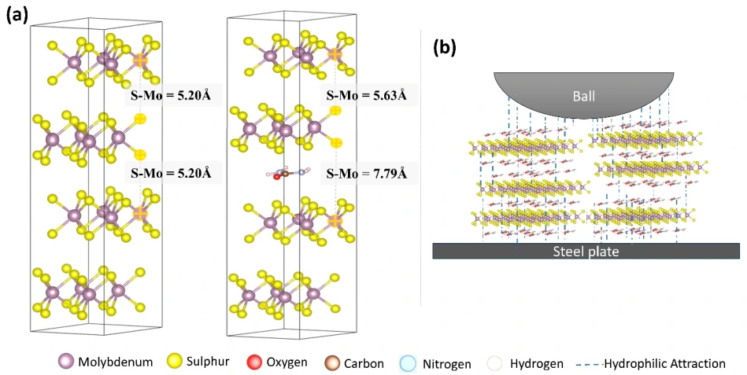

93%
lower wear in PAO
Oxidation-assisted DDA functionalization of MoS2 reduced friction by 41% and wear by 93% relative to base PAO at 0.25 wt.%.
Read the paperSurface-engineered lubrication
Tailoring particle surfaces so lubricating additives remain dispersed and protect the sliding contact.
MoS2 has an intrinsically low-shear layered structure, but its performance as an additive also depends on its chemical environment. My research uses urea functionalization, controlled oxidation and dodecylamine modification to address dispersion stability and interfacial lubrication across distinct carrier fluids.
THE RESEARCH QUESTIONHow can surface chemistry make layered and carbon nanomaterials effective in grease, water and nonpolar oils?

SELECTED OUTCOMES
Oxidation-assisted DDA functionalization of MoS2 reduced friction by 41% and wear by 93% relative to base PAO at 0.25 wt.%.
Read the paperUrea-functionalized MoS2 remained dispersed in water, ethylene glycol and glycerol. In water, friction and wear decreased by 84% and 81% versus the additive-free fluid.
Read the paperUrea-functionalized MoS2 reduced wear by 85% and friction by 22% relative to unmodified MoS2 in the grease study.
Read the paperDodecylamine-functionalized carbon nanoparticles remained suspended in PAO and reduced friction by 26% at 1 N versus base oil.
Read the paperThe studies address different parts of the same design problem: additive compatibility, aggregation, interfacial retention and sliding behavior. Their percentage improvements use different reference formulations and are not a head-to-head ranking of materials.
THE EVIDENCE
Tribology International
Tribology International
ACS Applied Materials & Interfaces
Journal of Tribology
GET IN TOUCH
Research collaborations and professional inquiries.